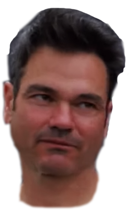

|  |
The Fantabulous
Loris Vergier Soundboard |
Channel your inner Loris Vergier and tell Jordi Cortes all about your setup woes through meaningful, unambiguous, highly contextual noises.
The 2019 UCI World Cup Downhill season is finished and so is the sound board. If Dialed continues in 2020 then I'll be back with more sounds and hopefully a few new features!
Want to use the sounds for your message tones? Download all the sounds from 2019 here.
Questions about the sound board? Contact me at soundboard@tomburridge.com All sounds generously, and involuntarily, provided by Fox from the Dialed video series, with one sneaky extra from Ben Cathro.
LVSB uses the jQuery and Howler JS libraries.
LVSB source code publically available on Github